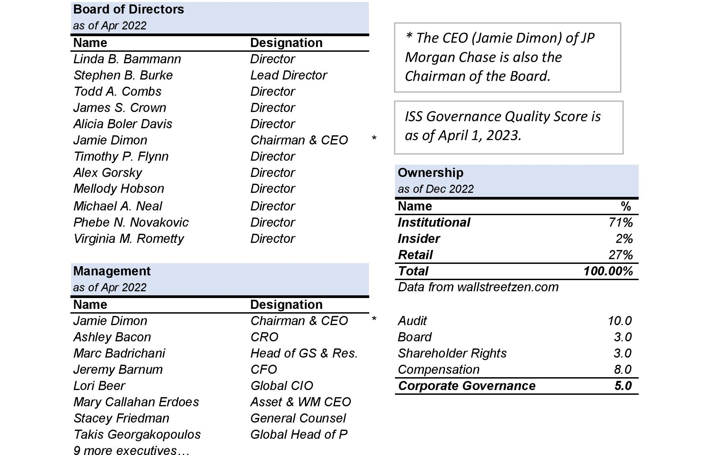
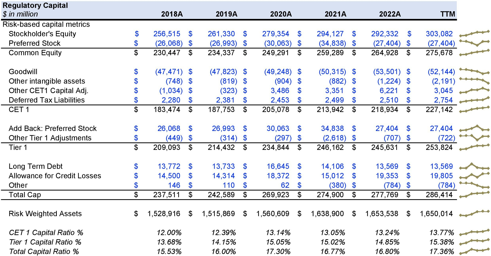
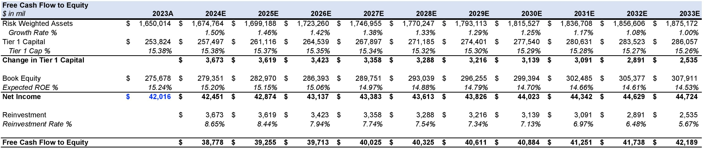
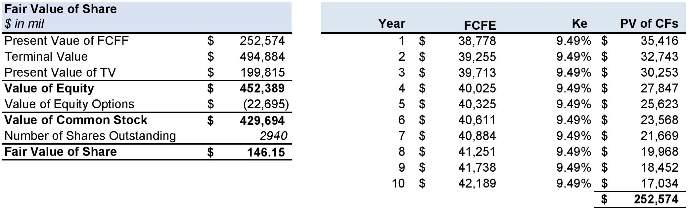

JP Morgan Chase - A Bunch of Thick Sticks
JPMorgan Chase & Co. (JPM) is a financial services company with a diversified business model that operates in four main segments: Consumer & Community Banking, Corporate & Investment Bank, Commercial Banking, and Asset & Wealth Management.    
The Consumer & Community Banking segment offers a variety of financial products and services to individuals and businesses, including checking and savings accounts, credit cards, mortgages, and small business loans. This segment generates revenue primarily through net interest income and fees charged for banking services.
The Corporate & Investment Bank segment provides services such as investment banking, treasury services, and securities trading to corporations, governments, and institutions. This segment generates revenue primarily through fees charged for services provided.
The Commercial Banking segment serves small and mid-sized businesses, providing products and services such as loans, treasury services, and cash management. This segment generates revenue primarily through net interest income and fees charged for banking services.
The Asset & Wealth Management segment provides investment management and wealth planning services to individuals, families, and institutions. This segment generates revenue primarily through fees charged for managing assets and providing investment advice.
Company’s Strengths: Strong brand reputation and recognition globally. Diversified business model across multiple segments and geographies. Leading position in investment banking, with a strong advisory and underwriting capabilities. Robust risk management practices and strong regulatory compliance. Large and stable customer base across consumer, commercial, and institutional segments.
Company’s Weaknesses: Heavy reliance on net interest income, which is vulnerable to interest rate fluctuations. Exposure to credit and market risks, especially in the investment banking segment. Limited geographical reach in certain emerging markets. Dependence on technology and IT infrastructure, which poses operational risks.
Potential Opportunities: Growing demand for digital banking and fintech solutions, which could expand JPM's customer base and revenue streams. Expansion into new markets and regions, such as Asia-Pacific and Latin America. Expansion of asset and wealth management business through acquisitions and partnerships. Potential to increase market share through strategic acquisitions and partnerships. Development of new financial products and services to meet evolving customer needs.
Threats that company might face: Increased competition from fintech startups and other established financial institutions. Regulatory changes and compliance risks, which could increase costs and limit growth opportunities. Economic and geopolitical uncertainties, such as trade tensions and political instability. Cybersecurity threats and data breaches, which could undermine customer trust and reputation. Changing consumer preferences and expectations, which may require significant investment to adapt and respond.
Competitors: (Bank of America Corporation) A leading competitor offering a wide range of financial services and global banking capabilities. (Wells Fargo & Company) A formidable rival known for its extensive branch network and diverse financial offerings. (Citigroup Inc.) A major player in the industry, providing a comprehensive suite of banking and financial services worldwide. (Goldman Sachs Group, Inc.) Renowned for its investment banking prowess and advisory services for corporations, governments, and high-net-worth individuals. (Morgan Stanley) A key competitor offering investment banking, wealth management, and institutional securities services. (Barclays PLC) A global financial institution with a strong presence in investment banking, corporate banking, and wealth management. (Deutsche Bank AG) A prominent competitor providing a range of financial services, including investment banking, asset management, and retail banking. (HSBC Holdings plc) A global banking giant offering diverse services, including retail banking, commercial banking, and wealth management. (UBS Group AG) A leading competitor specializing in wealth management, investment banking, and asset management services. (Credit Suisse Group AG) A strong rival known for its investment banking, private banking, and asset management expertise.
Corporate Governance: The CEO (Jamie Dimon) of JP Morgan Chase is also the Chairman of the Board. With an average ISS Governance Score of 5.0, it states that the overall corporate governance at JP Morgan is good, but can be improved further.
Valuation Summary
Based on the key pointers and fundamentals, here is my summary of my valuation of JP Morgan Chase. The DCF is a forward-looking valuation approach. Therefore, in order to derive the target price, I build several assumptions in the three main pillars that sustain this method: (1) Free cash flows to equity, (2) Terminal value, and (3) Cost of Equity. Considering that the company has been growing at significant levels during the last five years, I found it appropriate to use the stable stage model. I forecasted the company to stabilize its operating activities in years to come.
Discounted Cash Flow Analysis: My base case analysis, with a Cost of Equity of 9.49% based on Cost of Equity based on CAPM (Capital Asset Pricing Model) and a Terminal FCF Growth Rate of 1%, produced fair value of $146.15.
Equity Options: JP Morgan issues about $22.6 billion worth of equity options in current financial year which I treated as a drain on cash flows.
Current Share Price: At $140.66, JP Morgan appears fairly overvalued to the implied intrinsic value from my valuation methodologies.
Other Methodologies: As per Price to Book Multiple Analysis, the fair value range comes from $81 and $114.
Target Price: As a result, I selected $160.02 as my target price for my hold recommendation. Noting the fact that, the target price is based on 12 months.
Thank you for reading! Check out my valuation by downloading the JP Morgan's Analysis below.